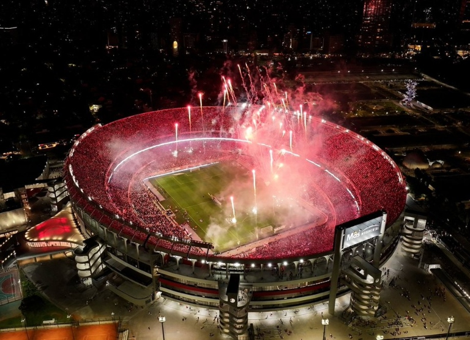

El Estadio Monumental, oficialmente Estadio Mâs Monumental por motivos de patrocinio, es el coloso que alberga la pasión de millones de riverplatenses y el escenario de los mayores triunfos del club.

Datos clave
83.214
Capacidad actual
1938
Año de inauguración
16
Finales de Libertadores
1978
Mundial disputado
Historia de su construcción
1934
River adquiere los terrenos en el barrio de Núñez por $569.403
1935
Comienzan las obras bajo dirección del arquitecto José Aslan
26/05/1938
Inauguración oficial ante Peñarol (3-1), con gol de Peucelle
1958
Finalización completa de las obras originales
1978
Remodelación para el Mundial, alcanzando 76.000 espectadores
2019
Nueva remodelación que lleva capacidad a más de 83.000
Características arquitectónicas
Estilo art-decó en su diseño original
Tribuna oficial con forma de herradura característica
Cuatro torres de iluminación de 45 metros de altura
Campo de juego de 105 x 68 metros
Nuevo techo cubriendo el 70% de las localidades
Momentos históricos
Final de la Copa América 1946
Mundial 1978 con la final Argentina-Holanda
Final de la Libertadores 1986 (River 1-0 América)
Final de la Libertadores 1996 (River 2-0 América)
Semifinal de la Libertadores 2018 vs Grêmio
Final de la Libertadores 2023 vs Fluminense
El Museo River
Inaugurado en 2009, es el museo más moderno de Sudamérica, con:
Más de 5.000 piezas históricas
Sala de trofeos interactiva
Experiencia de realidad virtual
Recorrido por los vestuarios y el túnel de acceso al campo